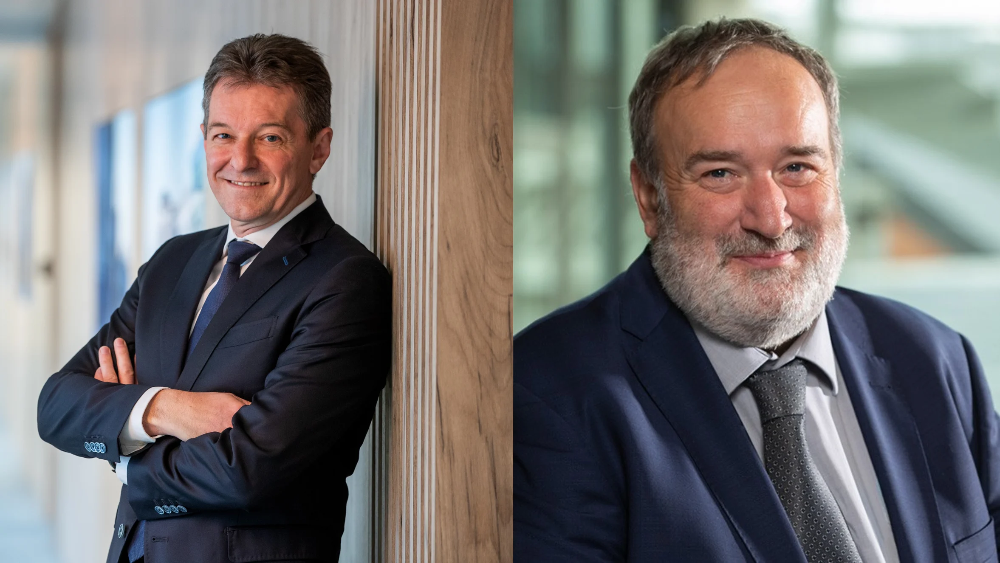
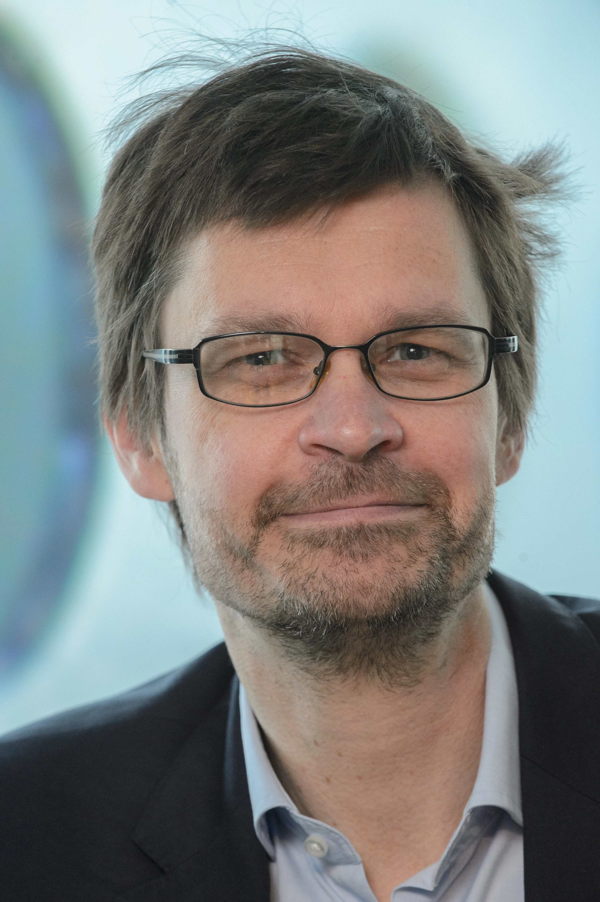
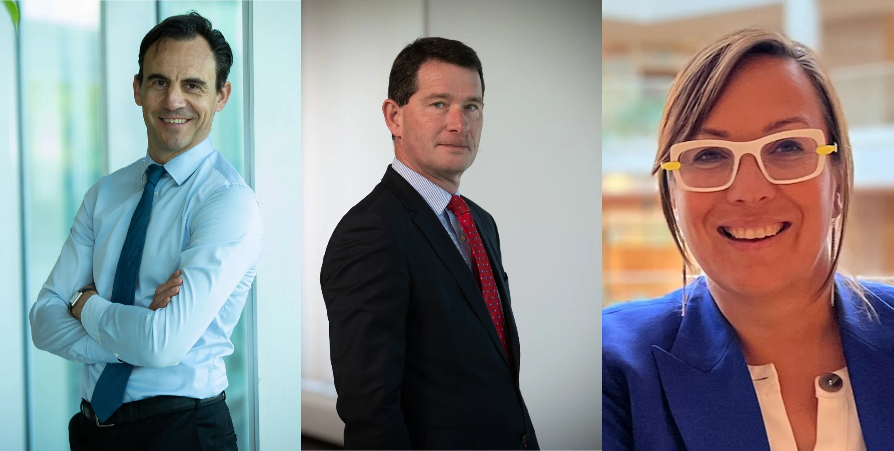

What can you expect from the Group Ecosphere Day
-
Johan Thijs and Erik Luts will make the 'Implementation of the Ecosphere Strategy' more tangible

- What happened in 2050? A short history of the future: by Filip Van den Abeele (Chief Science at VRT, the Belgian Public Broadcast), transporting us through time to realize the irresistibility of change and the potential it holds.

- David Moucheron, Patrick Tans and Karin Van Hoecke telling the Belgian story of the implementation of the Ecosphere, with a focus on Sustainable Housing & Mobility. Afterwards they invite you for a coffee and lots of questions.

- Workshops on the Intent Factory and Intent Thinking
- We close the day with the Bubblicious (after work) Party!